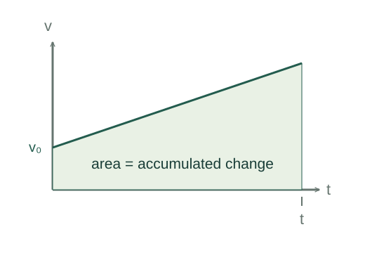

Derive the constant-acceleration equations
These three familiar equations follow by accumulating a constant acceleration and then accumulating the resulting velocity. The factor ½ records the triangular area under the changing part of the velocity graph.
What the symbols mean
x₀, v₀: position and velocity at t = 0; a: signed acceleration; x, v: values at time t. Use one consistent axis.
When this applies
Acceleration is constant over the entire time interval. These are one-dimensional component equations.

Accumulate acceleration
Acceleration is the rate of change of velocity. Integrate from initial time zero to time t. Since a is constant, its integral is at.
Go deeper at this stepWhy is integration the reverse of taking a rate?Why an integral accumulates a rateAccumulate velocity
Substitute the velocity found in step 1 into dx/dt = v. The constant part produces v₀t; the linearly growing part produces half of at².
Eliminate time
Write the displacement as average velocity times time. Under constant acceleration the velocity graph is a straight line, so its average is the mean of its endpoints. Multiply by a and use at = v − v₀.
Check the zero-acceleration limit
With a = 0, velocity stays constant and the displacement reduces to v₀t. This checks the structure of the equations; it does not extend them to variable acceleration.
Where each equation comes from
Derived equations link to an argument below. Definitions, physical postulates and constitutive models are identified as the inputs of that argument.
Derivation of the main resultDerived result
Conditions: Acceleration is constant over the entire time interval. These are one-dimensional component equations.
- Accumulate acceleration. Acceleration is the rate of change of velocity. Integrate from initial time zero to time t. Since a is constant, its integral is at. Explain the equation used in step 1 ↗ Why is integration the reverse of taking a rate? ↗
- Accumulate velocity. Substitute the velocity found in step 1 into dx/dt = v. The constant part produces v₀t; the linearly growing part produces half of at². Explain the equation used in step 2 ↗
- Eliminate time. Write the displacement as average velocity times time. Under constant acceleration the velocity graph is a straight line, so its average is the mean of its endpoints. Multiply by a and use at = v − v₀. Explain the equation used in step 3 ↗
- Check the zero-acceleration limit. With a = 0, velocity stays constant and the displacement reduces to v₀t. This checks the structure of the equations; it does not extend them to variable acceleration. Explain the equation used in step 4 ↗
Equation in step 1Derived result
What is being shown: Accumulate acceleration
Acceleration is the rate of change of velocity. Integrate from initial time zero to time t. Since a is constant, its integral is at.
Starting conditions and inputs: Acceleration is constant over the entire time interval. These are one-dimensional component equations.
Equation in step 2Derived result
What is being shown: Accumulate velocity
Substitute the velocity found in step 1 into dx/dt = v. The constant part produces v₀t; the linearly growing part produces half of at².
Earlier results used in this argument:
- v − v₀ = ∫₀ᵗ a dt′ = at (Derived result)
Equation in step 3Derived result
What is being shown: Eliminate time
Write the displacement as average velocity times time. Under constant acceleration the velocity graph is a straight line, so its average is the mean of its endpoints. Multiply by a and use at = v − v₀.
Earlier results used in this argument:
- v − v₀ = ∫₀ᵗ a dt′ = at (Derived result)
- x − x₀ = ∫₀ᵗ (v₀ + at′) dt′ = v₀t + ½at² (Derived result)
Equation in step 4Derived result
What is being shown: Check the zero-acceleration limit
With a = 0, velocity stays constant and the displacement reduces to v₀t. This checks the structure of the equations; it does not extend them to variable acceleration.
Earlier results used in this argument:
- v − v₀ = ∫₀ᵗ a dt′ = at (Derived result)
- x − x₀ = ∫₀ᵗ (v₀ + at′) dt′ = v₀t + ½at² (Derived result)
- 2a(x − x₀) = (v + v₀)(v − v₀) = v² − v₀² (Derived result)
A worked example
Starting from rest with a = 2 m/s² for 3 s gives v = 6 m/s and displacement 9 m. The time-free equation checks this: 6² = 2 × 2 × 9.
Derivation behind this calculation ↗A point to keep straight
A slowing object does not automatically have negative acceleration: the sign depends on the chosen axis.
Check the assumptions and derivation ↗